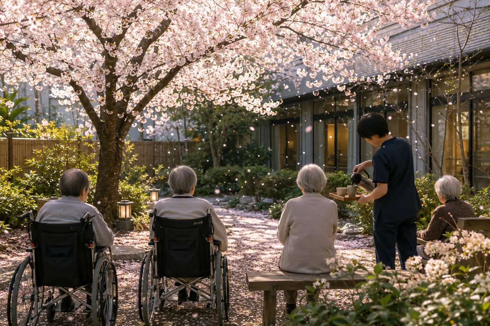

Monthly Care Report
2026年4月 (April 2026)
お花見と、新しい季節 — 介護タクシー外出費の施設負担化
4月は、外に出る季節。お花見散歩、合同誕生日パーティー、端午の節句準備など、入居者・スタッフ・ご家族の動きが一斉に活性化した月でした。Care Support Pass のご支援を原資に、介護タクシーを使った外出費を、月1回まで完全施設負担化しました。
Numbers
数字で見る今月
現入居者数
21名
新規ご入居
2名
活動イベント
7回
外部訪問者
34名
In Focus
今月の主な瞬間

Album
今月のひとこま


Story
今月の活動
お花見散歩
4月8日、入居者8名と一緒に上野恩賜公園へ満開の桜を見にお花見散歩へ。入居者8名・スタッフ5名・看護師1名で出発しました。介護タクシー2台で往復、現地では車椅子8台での移動と、入念な準備をしての外出となりました。「学生時代に来た上野公園が、こんな景色だったとは」「桜は、毎年同じはずなのに、今年は特別に美しい」── 入居者の方々のお言葉に、私たちスタッフも感慨深い1日でした。
合同誕生日パーティー
4月15日、4・5・6月生まれの入居者の方々の合同誕生日パーティーを開催。生クリームたっぷりのバースデーケーキ(嚥下調整版もご用意)で、共用ラウンジが歓声に包まれました。「もう、誕生日を祝ってもらえる年でもないと思っていたのに」── そうおっしゃる方が、最も嬉しそうでした。
介護タクシー外出費の施設負担化
従来、入居者が介護タクシーを利用して外出する場合は、お一人あたり片道¥4,000〜¥6,000(目的地によって変動)の自己負担が発生していました。今月より、Care Support Pass のご支援を原資に、月1回までの外出費(往復)を施設負担化しました。「散歩や買い物に、月1回は気軽に出かけられる」── 入居者の方々の活動範囲が、確実に広がっています。
来月の予定
- 5月5日: 端午の節句 (柏餅・菖蒲湯)
- 5月中旬: 屋上庭園で夏野菜の植え付け
- 5月下旬: 開業1.5周年記念 (オープンハウス第2回)
Care Support Pass · Finance
支援者数 と 収支報告
支援者数 / 目標 25万人
117.2%
0
目標 250,000名 / 月¥25,000,000
117.2%
当月 支援者数
293,000名
当月 支援額
¥29,300,000
累計 支援額
¥215,100,000
支援金の使い道 — 2026年4月
介護タクシー外出費の月1回まで施設負担化(月¥8,000 × 21名 = 月¥168,000)、全既存施策の継続。
From the Director